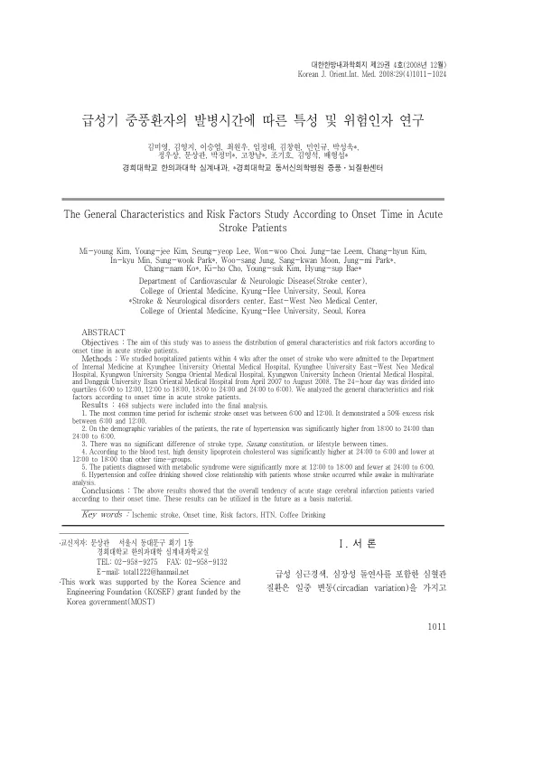

급성기 중풍환자의 발병시간에 따른 특성 및 위험인자 연구
Kim My, Kim Yj, Lee Sy, Choi Ww, Leem Jt, Kim Ch, Min Ik, Park Sw, Jung Ws, Moon Sk, Park Jm, Ko Cn, Cho Kh, Kim Ys, Bae Hs
The Journal of Internal Korean Medicine 29(4):1011-1024

첫 장 · 오픈액세스First page · open access
논문 소개Summary
급성기 중풍 환자의 발병 시각에 따라 특성과 위험인자가 어떻게 갈리는지 살핀 다기관 연구입니다. 2007년 4월부터 2008년 8월까지 다섯 개 한방병원에 발병 4주 이내에 입원한 468명이 분석에 들어갔고, 하루를 여섯 시간씩 네 구간으로 나누어 견주었습니다. 허혈성 뇌졸중은 오전 6시에서 정오 사이에 가장 많이 발병했고 이 구간의 위험이 50% 더 높았습니다. 고혈압 비율은 오후 6시에서 자정 사이가 자정에서 새벽 6시보다 높았고, 고밀도지단백 콜레스테롤과 대사증후군 비율도 구간에 따라 달랐습니다. 반면 뇌졸중 유형과 사상체질, 생활습관은 구간별로 차이가 없었습니다. 다변량 분석에서는 고혈압과 커피 섭취가 깨어 있을 때의 발병과 관련이 있었습니다.
A multicentre study examining how the characteristics and risk factors of acute stroke patients differ according to the time of onset. Of patients admitted within four weeks of onset to five Korean medicine hospitals between April 2007 and August 2008, 468 entered the analysis, with the day divided into four six-hour quartiles. Ischaemic stroke onset was most common between 6:00 and 12:00, a period carrying a 50% excess risk. Hypertension was more frequent between 18:00 and 24:00 than between 24:00 and 6:00, and high-density lipoprotein cholesterol and the proportion with metabolic syndrome also varied by period. Stroke type, Sasang constitution and lifestyle, by contrast, showed no difference between periods. In multivariate analysis, hypertension and coffee drinking were associated with onset while awake.
인용Cite
Kim My, Kim Yj, Lee Sy, Choi Ww, Leem Jt, Kim Ch, Min Ik, Park Sw, Jung Ws, Moon Sk, Park Jm, Ko Cn, Cho Kh, Kim Ys, Bae Hs. 급성기 중풍환자의 발병시간에 따른 특성 및 위험인자 연구. The Journal of Internal Korean Medicine. 2008;29(4):1011-1024.